How it works

-
Push F5 and speak.
A small pop-up shows the recording, and the windmill in the menu bar turns red.
-
Push F5 again.
Moulin sends the audio to ChatGPT from its own hidden window. The sails turn while ChatGPT transcribes.
-
The text is at your cursor.
Moulin pastes the text in the app that you use. The text also stays in the clipboard.
Good to know
- Every app
- Moulin pastes where the cursor is: a mail, a note, a code editor, or a chat.
- Your ChatGPT plan
- No API key and no extra cost. You sign in to ChatGPT one time, in the Moulin window.
- About 1.6 seconds
- For 30 seconds of speech, the text arrives 1.4 to 1.8 seconds after you stop.
- No copies
- Moulin sends the audio only to ChatGPT. It keeps the audio in memory until the text is in your clipboard, and it never writes the audio to disk.
- Ready
- Recording
- Transcribing
- Problem
Install
Caution: Moulin automates the ChatGPT web app. The OpenAI Terms of Use forbid this, so OpenAI can warn or suspend your account. A change of the web app can also stop Moulin.
- Download Moulin for macOS (Apple silicon), open the disk image, and drag Moulin to Applications.
- Start Moulin. Apple did not notarize the app, so macOS blocks the first start: open System Settings > Privacy & Security, and click Open Anyway.
- Sign in to ChatGPT in the Moulin window. Then allow the microphone, and allow Accessibility so that Moulin can paste.
Build it yourself
Moulin also builds for Windows and Linux, but these builds are not tested yet. You need Node.js.
git clone https://github.com/brohoya/moulin.git
cd moulin
npm install
npm run dist:macUse dist:win or dist:linux for the other systems. The README gives the details.